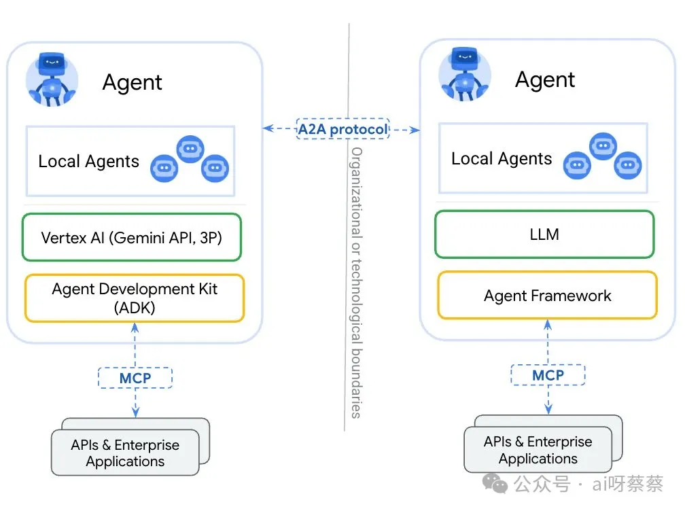
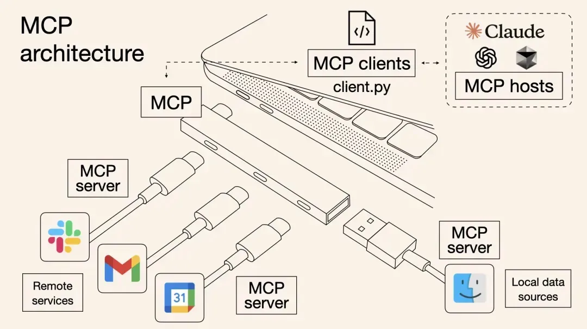

1 关于A2A、MCP、Agent、LLM的6条极简事实
谷歌发布了A2A协议（Agent2Agent Protocol），有媒体称之为“谷歌版MCP”，也有人认为是“对抗MCP”，甚至拔高到“终结MCP时代”。
其实并非如此，两者并不相同，也不对立，而是互补关系。有一张图很好地解释了两张的关系：

如果要更好地理解 A2A 和 MCP 的关系，这里需要引入 Agent 和 LLM 。
当然，这篇文章不会抠很多学术概念，而是尽量用大白话，在两分钟内帮助大家充分理解这四者的关系。
1、LLM（即大语言模型）无法主动向外部获取数据。
它依赖于训练时静态的知识库（例如截至某个日期的互联网文本），或者用户提供的输入上下文。就像黑箱子一样，它只能处理送进来的东西，无法自己“开门”出去探索。
2、当 LLM 被嵌入到一个 Agent（智能体，可以是Cursor、Manus、DeepReasearch等）中时，这个黑箱子就被“打开”并赋予了主动性。
Agent 可以利用各种外部工具（例如网络搜索、数据库访问等）为 LLM 提供实时数据，或者通过记忆机制让它“记住”之前的交互，从而弥补 LLM 的局限。
3、Agent 为 LLM 接入各种外部工具的传统方式是 API 集成。
由于每种 API 集成都需要定制实现，千差万别，这使得 Agent 获取更多外部数据、工具（这些数据、工具，本质上都是为 LLM 提供上下文）并不容易。
4、MCP（模型上下文协议）最初是由 Anthropic 发起的一个开源项目，旨在让 Agent（包括嵌入 Agent 的 LLM）更容易与外部数据、工具交互。
区别于以前每个 API 都需要单独集成，现在 MCP 充当标准化的“连接器”，可以把它想象成 Agent 的 USB-C 端口：它为将 Agent 连接到各种数据、工具提供了一种统一的方法。

5、A2A（Agent2Agent Protocol）由谷歌提出，它明确提到自己是对 MCP 的补充，要实现的是 Agent 和 Agent 之间的连接。即使这些 Agent 来自不同厂商，只要它们都遵循 A2A 协议，那就能实现真正的多 Agent 干活。
6、总结来说，LLM 提供智能给 Agent 执行任务，Agent 借助 MCP 可以更方便地获取外部数据、工具，Agent 之间则可以通过 A2A 实现更高效的协作。一个让 Agent 帮大家打工的世界正在降临。